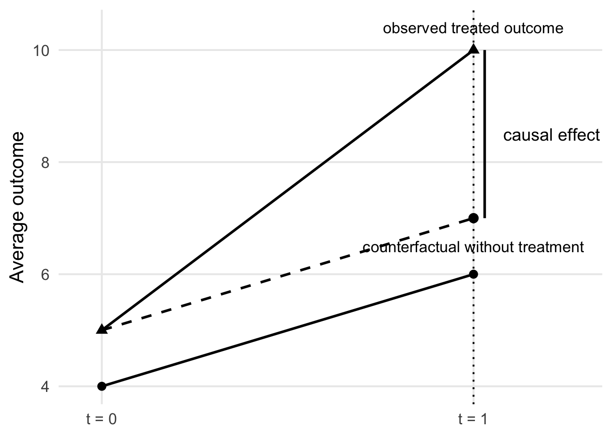
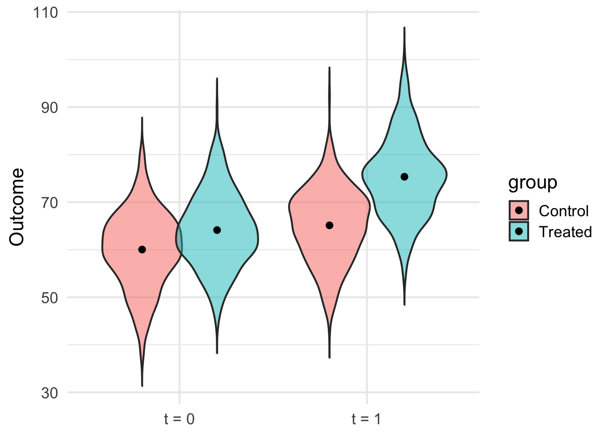
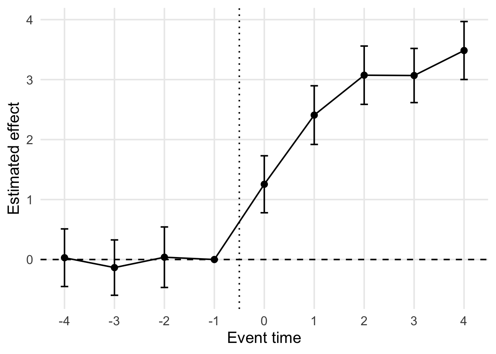
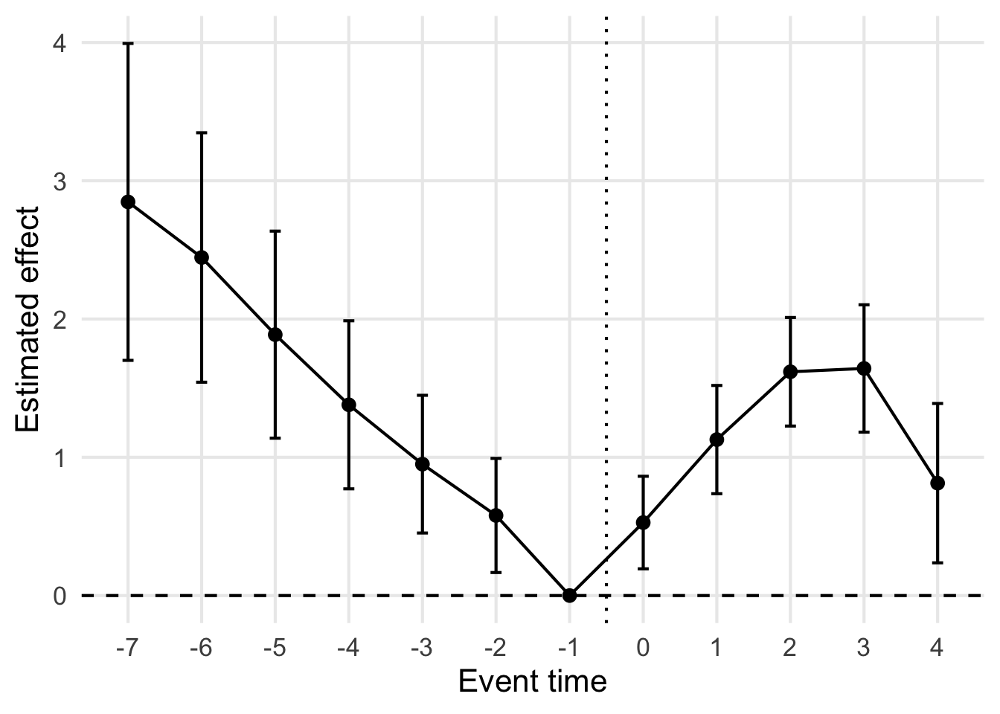

Lecture 7：Difference-in-Differences
2群2期・event study・staggered DiD
重要この講義で押さえたいこと
- DiD は、前後比較と群間比較の弱点を同時に補正するための方法である。
- 識別の核心は 平行トレンド仮定 にあり、event study はその妥当性を点検するための重要な道具である。
- 処置時期がずれる staggered DiD では、比較対象の作り方と係数の解釈が急に難しくなる。
今回はまず「なぜ差を二回取るのか」という直感から入り、その後に 2群2期の回帰式、event study、staggered DiD へと進む。前半で直感をつかみ、後半で何が仮定で何が推定量なのかを整理する構成である。
ノートこの lecture の流れ
- まず、前後比較と群間比較がそれぞれ何に失敗するのかを具体例で確認する。
- 次に、2群2期の DiD を図・潜在アウトカム・回帰式で理解する。
- 後半で event study と staggered DiD に進み、現代的な注意点まで押さえる。
重回帰があれば大体何でもできる。というか、やりたいことを重回帰でできるように頭を使うべき。
今回は重回帰を利用した代表的な識別戦略であるDifference-in-Differences（DiD）という作戦を取り上げる。
導入：官僚として就業支援政策の効果を報告する君と不機嫌な経済学者
君が官僚で、諮問会議でこう報告したとする。
「わが省では、ある地域に新しい就業支援政策を導入しました。 政策導入前の平均就業率は 60 でしたが、導入後は 70 になりました。 つまり、この政策によって就業率は 10 ポイント改善したと考えられます。」
表にするとこうである。
| group | t=0 | t=1 | change |
|---|---|---|---|
| treated | 60 | 70 | +10 |
一見、かなり説得的に見える。 政策の前には 60、後には 70 なのだから、たしかに 10 上がっている。
しかし、ここで経済学者が手を挙げる。
「いや、それだけでは政策の効果とは言えません。 その時期には景気全体が良くなっていて、何もしなくても就業率が上がっていたかもしれないでしょう。」
政策導入の前後で数字が変わったとしても、その変化には
- 政策の効果
- 景気変動
- 季節要因
- 人口構成の変化
- 全国共通のマクロショック
など、いろいろなものが混ざっている。
つまり、処置群の前後比較
Y_{treated,1} - Y_{treated,0}
は、政策効果そのものではなく、政策効果と時間変化が混ざったものである。
君は
「なるほど。たしかに前後比較だけでは、政策と同時に起きた他の変化を除けませんね」
と認めざるを得ない。
では「政策後の処置群と対照群の比較」を見せてみる
君は翌週、少し修正版の資料を持ってくる。
「ご指摘を踏まえ、今度は政策後の時点で比較対象も用意しました。 政策を実施した地域の就業率は 70、実施していない地域の就業率は 62 でした。 したがって、政策によって就業率は 8 ポイント高くなったと考えられます。」
表にするとこうである。
| group | t=1 |
|---|---|
| treated | 70 |
| control | 62 |
これもまた、一見もっともらしい。 たしかに政策後の処置群の方が高い。
しかし、経済学者はまた手を挙げる。
「いや、それでもまだだめです。 その2地域は、政策前からそもそも違っていたかもしれません。」
たとえば政策前の時点で、実はこうだったかもしれない。
| group | t=0 | t=1 |
|---|---|---|
| treated | 68 | 70 |
| control | 60 | 62 |
この場合、政策後の差はたしかに
70 - 62 = 8
である。
しかし政策前からすでに
68 - 60 = 8
の差があった。 すると、政策後に 8 ポイント差があること自体は、政策の効果を意味しない。 単に「もともと処置群の方が高かった」だけかもしれないからである。
君は困ってしまい
「前後比較をすると“時間変化が混ざる”と言われ、 同時点比較をすると“もともとの差が混ざる”と言われる。 では一体どうすればいいのですか」
と聞くことになる。
そこで Difference-in-Differences である
ここで経済学者がこう答える。
「必要なのは、 1つ目の比較で取りきれなかった“時間変化”を除き、 2つ目の比較で取りきれなかった“もともとの差”も除くことです。 そのためには、差を二回とります。」
たとえば次のようなデータを考えよう。
| group | t=0 | t=1 | change |
|---|---|---|---|
| treated | 60 | 70 | +10 |
| control | 55 | 61 | +6 |
ここで、
- 処置群は +10
- 対照群は +6
だけ伸びている。
もし対照群の +6 が、景気改善などによる「政策がなくても起きた共通の伸び」だと考えられるなら、処置群の +10 のうち政策による追加分は
10 - 6 = 4
である。
これが Difference-in-Differences の考え方である。
式で書けば、
(70 - 60) - (61 - 55) = 10 - 6 = 4
となる。
この 4 が、「政策によって追加的に生じた変化」として解釈される。
ここまでの話を整理するとこうなる。
前後比較だけではだめ
官僚：
「処置群は 60 から 70 に増えました。だから効果は 10 です。」
経済学者：
「それは政策効果と時間変化が混ざっています。」
政策後の群間比較だけでもだめ
官僚：
「では政策後に treated が 70、control が 62 なので効果は 8 です。」
経済学者：
「それは政策効果ともともとの群間差が混ざっています。」
差の差をとる
経済学者：
「treated の前後差が 10、control の前後差が 6 なら、 共通の時間変化 6 を引いた残り 4 を政策効果と考えます。」
つまり DiD は、
前後比較が抱える問題 → 時間変化が混ざる
同時点比較が抱える問題 → もともとの差が混ざる
を同時に修正するための方法なのである。
重要ここからは図と数式で整理する
導入のストーリーで見たのは 「なぜ差を二回取るのか」 という直感である。ここからは、その直感を図・潜在アウトカム・回帰式の三つの言葉で言い換えていく。
Difference-in-Differences をちゃんと理解する
Difference-in-Differences（DiD）は、ある政策や介入の効果を、介入前後の変化と比較対象の変化を組み合わせて測る方法である。
典型的には、あるグループだけがある時点で政策を受け、別のグループは受けないという状況を考える。
たとえば、
- ある地域では政策が導入された
- 別の地域では政策が導入されなかった
- 政策前後でアウトカムがどう変わったかを見たい
という状況である。
このとき、単に「政策を受けたグループの前後差」を見るだけでは不十分である。なぜなら、アウトカムは政策以外の理由でも時間とともに変化するからである。
逆に、政策後の時点で「処置群と対照群の差」を見るだけでも不十分である。なぜなら、もともと両グループの水準が違っていたかもしれないからである。
そこで DiD では、
- グループ間の差
- 時間による差
の両方を使って、政策の効果だけを取り出そうとする。
1. DiDが一撃でわかる図
- t = 0の時点でグループ間に差がある
- 「処置群に処置を施さなかったらt = 1でこのくらいになる」という点が想像できる
- この処置の効果は実際の処置群の結果と、「処置しなかったらこんくらい」という結果との差
2. 基本設定
もっとも基本的な DiD は、2群 \times 2期 の設定である。
グループは2つ
- 処置群：D_i = 1
- 対照群：D_i = 0
時点は2つ
- 政策前：t=0
- 政策後：t=1
個体 i の時点 t におけるアウトカムを Y_{it} とする。
たとえば、Y_{it} は賃金、雇用、売上、テストスコアなどである。
ここでは、政策後に処置群だけが処置を受けるとする。したがって、実際の処置状態は次のようになる。
- 政策前は全員 untreated
- 政策後は処置群だけ treated
このような設定のもとで、政策の因果効果を知りたい。
3. 4つの平均を書く
DiD では、まず4つの平均を書くと構造が見えやすい。
E[Y_{it} \mid D_i=1,, t=1]
E[Y_{it} \mid D_i=1,, t=0]
E[Y_{it} \mid D_i=0,, t=1]
E[Y_{it} \mid D_i=0,, t=0]
これを表にすると次のようになる。
| 政策前 t=0 | 政策後 t=1 | |
|---|---|---|
| 処置群 D=1 | E[Y \mid D=1,t=0] | E[Y \mid D=1,t=1] |
| 対照群 D=0 | E[Y \mid D=0,t=0] | E[Y \mid D=0,t=1] |
ここで、
処置群の前後差は
E[Y \mid D=1,t=1] - E[Y \mid D=1,t=0]
対照群の前後差は
E[Y \mid D=0,t=1] - E[Y \mid D=0,t=0]
である。
DiD 推定量は、この2つの差をさらに引いた
\hat\delta_{DiD} = \bigl(E[Y \mid D=1,t=1] - E[Y \mid D=1,t=0]\bigr) - \bigl(E[Y \mid D=0,t=1] - E[Y \mid D=0,t=0]\bigr)
で定義される。
これが difference in differences である。
4. なぜ「差の差」をとるのか
DiD の直感はかなり単純である。
処置群の前後差には、
- 政策の効果
- 政策と無関係な時間変化
の両方が含まれている。
たとえば景気の変化、季節性、全国共通のショックなどによって、政策がなくてもアウトカムは変化しうる。
一方、対照群の前後差には政策効果は入らないが、同じ時期に起きた共通の時間変化は入ると期待される。
したがって、
- 処置群の前後差から
- 対照群の前後差を引く
ことで、共通の時間変化を差し引き、政策に伴う追加的な変化だけを取り出そうとするのである。
つまり DiD は、
「もし処置群が政策を受けていなかったら、政策後にどれくらい変化したはずか」
を対照群の変化によって近似する方法である。
5. 潜在アウトカムで書く
このアイデアを因果効果として厳密に書くため、潜在アウトカム (potential outcome)という概念を導入する。
各個体 i、時点 t について、
- Y_{it}(1)：その時点で処置を受けたときの潜在アウトカム
- Y_{it}(0)：その時点で処置を受けなかったときの潜在アウトカム
を考える。
このとき、政策後の処置群に対して知りたい因果効果は
E[Y_{i1}(1) - Y_{i1}(0) \mid D_i=1]
である。
これは「政策後における処置群の平均処置効果」である。
しかし、処置群について政策後に観測できるのは Y_{i1}(1) だけであり、Y_{i1}(0) は観測できない。つまり、政策がなかった世界の処置群のアウトカムは見えない。
DiD の中心的な発想は、この見えない反実仮想
E[Y_{i1}(0) \mid D_i=1]
を、対照群の時間変化を使って埋めることにある。
6. 平行トレンド仮定
DiD の識別で最も重要な仮定は 平行トレンド仮定 である。
2期の設定では、これは
E[Y_{i1}(0) - Y_{i0}(0) \mid D_i=1] = E[Y_{i1}(0) - Y_{i0}(0) \mid D_i=0]
と書ける。
意味は明快である。もし誰も処置を受けなかったなら、処置群と対照群の平均的な変化は同じだった、という仮定である。
この仮定のもとでは、対照群の前後変化を使って、処置群の「政策がなかった場合の変化」を推測できる。
したがって、処置群の政策後の反実仮想平均は
E[Y_{i1}(0) \mid D_i=1] = E[Y_{i0}(0) \mid D_i=1] + \Bigl( E[Y_{i1}(0) \mid D_i=0] - E[Y_{i0}(0) \mid D_i=0] \Bigr)
と表現できる。
これによって、観測データから政策効果を識別できる。
7. DiD 推定量が何を識別するか
観測されるアウトカムを使った DiD 推定量は
\delta_{DiD} = \bigl(E[Y_1 \mid D=1] - E[Y_0 \mid D=1]\bigr) - \bigl(E[Y_1 \mid D=0] - E[Y_0 \mid D=0]\bigr)
である。
平行トレンド仮定のもとでは、この量は
E[Y_{i1}(1) - Y_{i1}(0) \mid D_i=1]
に一致する。
つまり basic な DiD が識別しているのは、政策後における処置群の平均処置効果である。
ここで重要なのは、DiD は一般に「全個体に対する平均処置効果」を識別しているとは限らず、まずは 処置群に対する効果を識別している、という点である。
8. 回帰式で書く
DiD は重回帰の形で非常に簡単に表せる。
次の回帰式を考える。
Y_{it} = \alpha + \beta D_i + \gamma Post_t + \delta (D_i \times Post_t) + u_{it}
ここで、
- D_i は処置群ダミーで、処置群なら1、対照群なら0
- Post_t は政策後ダミーで、政策後なら1、政策前なら0
- D_i \times Post_t は交差項で、「処置群かつ政策後」のときだけ1になる
この回帰式の各セルの期待値を計算すると、
対照群・政策前では
E[Y \mid D=0, Post=0] = \alpha
対照群・政策後では
E[Y \mid D=0, Post=1] = \alpha + \gamma
処置群・政策前では
E[Y \mid D=1, Post=0] = \alpha + \beta
処置群・政策後では
E[Y \mid D=1, Post=1] = \alpha + \beta + \gamma + \delta
となる。
したがって、
処置群の前後差は
(\alpha + \beta + \gamma + \delta) - (\alpha + \beta) = \gamma + \delta
対照群の前後差は
(\alpha + \gamma) - \alpha = \gamma
なので、その差は
(\gamma + \delta) - \gamma = \delta
となる。
つまり、交差項 D_i \times Post_t の係数 \delta が DiD 推定量そのものである。
9. 回帰式の係数の意味
この回帰式
Y_{it} = \alpha + \beta D_i + \gamma Post_t + \delta (D_i \times Post_t) + u_{it}
において、各係数の意味は次の通りである。
- \alpha：対照群・政策前の平均水準
- \beta：政策前における処置群と対照群の平均差
- \gamma：対照群における前後の平均変化
- \delta：処置群が政策後に経験した追加的な変化
この \delta を政策効果として解釈するのが DiD である。
ここで大事なのは、\beta = 0 である必要はないということである。つまり、処置群と対照群は、もともとの水準が違っていてもよい。
DiD が必要としているのは、水準が同じことではなく、処置がなければ両グループの変化の仕方が同じだったということである。これが平行トレンド仮定の中身であり、DiD の核心である。
ノート一度、回帰で確かめる
ここでは、今まで説明してきた DiD の考え方が実際の回帰係数としてどう現れるのかをシミュレーションで確認する。式の意味と回帰の出力を対応づけながら読むと理解しやすい。
シミュレーション
library(dplyr)
library(ggplot2)
library(broom)
library(knitr)
set.seed(123)
# -----------------------------
# 1. シミュレーション設定
# -----------------------------
n_each <- 400
mu_control_t0 <- 60
group_effect <- 4
time_effect <- 5
treat_effect <- 6 # これが知りたいパラメータ
sigma <- 8
# -----------------------------
# 2. データ生成
# -----------------------------
df <- expand.grid(
id = 1:(2 * n_each),
t = c(0, 1)
) |>
as_tibble() |>
mutate(
treated = ifelse(id <= n_each, 1, 0),
post = t
) |>
mutate(
mu =
mu_control_t0 +
group_effect * treated +
time_effect * post +
treat_effect * (treated * post),
y = mu + rnorm(n(), sd = sigma),
group = ifelse(treated == 1, "Treated", "Control"),
time_label = ifelse(post == 0, "t = 0", "t = 1")
)
# -----------------------------
# 3. バイオリンプロット
# -----------------------------
ggplot(df, aes(x = time_label, y = y, fill = group)) +
geom_violin(trim = FALSE, alpha = 0.5, position = position_dodge(width = 0.8)) +
stat_summary(
fun = mean,
geom = "point",
position = position_dodge(width = 0.8),
size = 2
) +
labs(
x = NULL,
y = "Outcome"
) +
theme_minimal(base_size = 16)
# -----------------------------
# 4. DiD 回帰
# -----------------------------
did_fit <- lm(y ~ treated + post + treated:post, data = df)
did_table <- broom::tidy(did_fit) |>
mutate(across(c(estimate, std.error, statistic, p.value), round, 4))
kable(did_table, caption = "DiD regression results")| term | estimate | std.error | statistic | p.value |
|---|---|---|---|---|
| (Intercept) | 60.0396 | 0.3945 | 152.1927 | 0 |
| treated | 4.0946 | 0.5579 | 7.3393 | 0 |
| post | 5.0919 | 0.5579 | 9.1268 | 0 |
| treated:post | 6.1242 | 0.7890 | 7.7621 | 0 |
Card and Krueger (1994): Minimum Wages and Employment: A Case Study of the Fast-Food Industry in New Jersey and Pennsylvania.
Difference-in-Differences の最も有名な応用例の1つが、Card and Krueger (1994) による最低賃金の研究である。
この論文は、1992年4月1日にニュージャージー州の最低賃金が $4.25 から $5.05 に引き上げられた ことを利用し、その政策がファストフード店の雇用にどのような影響を与えたかを分析した。比較対象として使われたのは、当時最低賃金が据え置かれていたペンシルベニア州東部のファストフード店である。著者たちは、最低賃金引き上げの前後で、ニュージャージー州とペンシルベニア州の店舗の雇用を比較した。
この研究の基本的な発想は非常にシンプルである。
もしニュージャージー州だけを見て、政策前後で雇用がどう変わったかだけを比べると、その差には最低賃金引き上げの効果だけでなく、景気変動や地域経済の変化なども混ざってしまう。逆に、政策後にニュージャージー州とペンシルベニア州を比較するだけだと、もともとの州間の違いが混ざってしまう。そこでこの論文は、ニュージャージー州の前後差から、ペンシルベニア州の前後差を引くという DiD の考え方を使って、最低賃金引き上げの影響を識別しようとした。
アウトカムとして中心的に使われるのは、各店舗の雇用量である。論文では、フルタイム労働者とパートタイム労働者を合算した full-time-equivalent employment が重要な指標として用いられている。サンプルは、Burger King, KFC, Wendy’s, Roy Rogers の4チェーンに属する店舗で、調査対象は合計 410 店舗である。調査は最低賃金引き上げの直前と直後に電話調査で実施され、ほぼ全店舗を追跡している。
推定したい量は
\begin{align*} &\bigl(E[Y \mid NJ=1, Post=1] - E[Y \mid NJ=1, Post=0]\bigr)\\ &- \bigl(E[Y \mid NJ=0, Post=1] - E[Y \mid NJ=0, Post=0]\bigr) \end{align*}
である。ここで Y は店舗の雇用、NJ=1 はニュージャージー州の店舗、NJ=0 はペンシルベニア州の店舗、Post=1 は最低賃金引き上げ後、Post=0 は引き上げ前を表す。この式は、「ニュージャージー州の雇用の変化」から「ペンシルベニア州の雇用の変化」を引いたものであり、DiD estimator そのものである。
回帰式で書くと、講義で学んだ basic な DiD とまったく同じで、たとえば
Y_{it} = \alpha + \beta NJ_i + \gamma Post_t + \delta (NJ_i \times Post_t) + u_{it}
と表せる。ここで Y_{it} は店舗 i の時点 t における雇用、NJ_i はニュージャージー州ダミー、Post_t は政策後ダミーである。このとき、交差項 NJ_i \times Post_t の係数 \delta が DiD estimator であり、ニュージャージー州の最低賃金引き上げが雇用に与えた追加的な変化として解釈される。
この論文の有名な点は、結果が当時の素朴な予想とやや異なっていたことである。標準的な競争市場モデルでは、最低賃金の引き上げは低賃金労働者の雇用を減らすと予想されることが多い。しかし Card and Krueger は、ペンシルベニア州の店舗と比べて、ニュージャージー州のファストフード店の雇用は減らなかったどころか、相対的には増えた という結果を報告した。
NBER ワーキングペーパー版の要約では、ニュージャージー州の雇用はペンシルベニア州に比べて 13% 増加した とまとめられている。
もちろん、この結果だけで「最低賃金は必ず雇用を増やす」と結論するわけではない。むしろこの論文の重要性は、政策評価では単純な前後比較ではなく、比較対象を用いた差の差が必要であることを鮮やかに示した点にある。また、最低賃金の効果は市場構造や労働需要の状況によって理論的にも一意ではない、というその後の大きな議論の出発点にもなった。実際、この研究は後に再分析や批判も多く呼び、最低賃金研究の巨大な文献を生むきっかけになった。
処置がいろいろな場所で順々に起こるとき
2期間2時点というDiDのもっともシンプルな形はわかりやすいが、設定が単純すぎて若干使いずらい。
例えば、先ほどの最低賃金の例で、次はニューヨーク州が最低賃金を上げたとしよう。ここまでを含めると、3地域が3時点で、異なるタイミングで「処置」の対象になっている。このような時、DiDの発想はどこまで有効だろうか？
こういった問題を考えるために、もうちょっと一般的な形でDiDを定式化しておくと使いやすくて便利そうである。
問題は2群 \times 2期の DiD のように「treated」と「control」を一度だけ決めればよいわけではないという点にある。ある時点では未処置だった地域が、別の時点では処置済みになるからである。
そこで、各単位 i が時点 t において処置を受けているかどうかを表す変数
D_{it}
を導入する。これは
- まだ処置が始まっていなければ D_{it}=0
- 処置が始まった後は D_{it}=1
となるような変数である。
たとえば、地域 i における処置開始時点を G_i と書くと、
D_{it} = 1{t \geq G_i}
と表せる。 ここで G_i は地域 i が初めて処置を受ける時点であり、もし最後まで処置を受けない地域があれば、その地域については G_i = \infty と考えればよい。
このように書くと、処置が順々に始まる状況でも、「各時点で見たとき、その単位がすでに処置を受けているかどうか」を一つの変数で表現できる。
このとき、DiD のもっとも自然な回帰式は
Y_{it} = \alpha_i + \lambda_t + \beta D_{it} + u_{it}
である。
ここで
- \alpha_i は単位固定効果
- \lambda_t は時点固定効果
- D_{it} はその時点で処置を受けているかどうか
- \beta は処置効果
を表す。
この式は、basic な DiD の回帰式
Y_{it} = \alpha + \beta_0 D_i + \gamma Post_t + \delta (D_i \times Post_t) + u_{it}
を一般化したものとみなせる。 2群 \times 2期では、「処置群ダミー」D_i と「事後ダミー」Post_t を別々に入れ、その交差項 D_i \times Post_t が処置状態を表していた。
しかし複数地域・複数時点の設定では、「いまこの単位は処置状態か」を直接表す D_{it} を入れ、さらに単位固定効果 \alpha_i と時点固定効果 \lambda_t を入れることで、同じ発想をより一般的な形で書ける。
この式の直感は simple な DiD と同じである。
- \alpha_i によって、地域ごとに異なる不変の特徴を取り除く。たとえば、もともと健康意識が高い地域、所得水準が高い地域、人口構成が違う地域などの恒常的な差を吸収する。
- \lambda_t によって、全地域に共通する時間変化を取り除く。たとえば、全国的な禁煙意識の上昇、不況や景気拡大、医療制度改革のような全体ショックを吸収する。
そのうえで、処置が始まった地域で、処置開始後にアウトカムがどれだけ追加的に変化したかを \beta で測ろうとしている。
潜在アウトカムを使って書くと、各単位 i に対して
- Y_{it}(0)：時点 t に処置を受けていないときの潜在アウトカム
- Y_{it}(1)：時点 t に処置を受けているときの潜在アウトカム
を考える。
このとき上の回帰で \beta を因果効果として解釈するためには、simple な DiD と同じく、処置がなければ処置群と未処置群のトレンドは同じだった、という考え方が必要になる。
複数タイミングの設定でこの考え方を言い直すと、まだ処置を受けていない単位を比較対象として使ったとき、処置を受ける単位の反実仮想トレンドはそれらと平行である、という仮定になる。
つまり、ある地域が時点 t に処置を受け始めたとき、その地域がもし処置を受けていなかったなら、アウトカムは「同じ時点でまだ未処置である他の地域」と同じようなトレンドで動いていたはずだ、ということである。
このように書くと、DiD は
- 2群 \times 2期の特別なテクニック
ではなく、
- 単位固定効果
- 時点固定効果
- 時変の処置変数
を使って、順々に導入される政策の効果を測る一般的な方法
として理解できる。
警告2群2期の直感をそのまま一般化しない
2群 $ imes$ 2期ではきれいに見えた DiD も、複数地域・複数時点になると どの単位が比較対象になっているのか が重要になる。ここから先は、その点を意識して読む必要がある。
重要な注意点
ただし、ここで一つ重要な注意がある。 上の回帰式
Y_{it} = \alpha_i + \lambda_t + \beta D_{it} + u_{it}
は見た目には非常に自然だが、処置効果が地域や時点によって異なる場合には、\beta の解釈が単純ではなくなる。この問題は近年の DiD 文献で非常に重要な論点になっており、特に決定版の解決策は出ていない。Staggered DiDという研究分野であり、これについては後述する。
何はともあれひとまずは、複数タイミングの DiD を書くときは、まずは上の fixed-effects 型の式を基本形として理解しつつ、そのあとで
- どの群が比較対象になっているのか
- 処置効果が異質なとき何が起こるのか
- event study でどう書くのか
を丁寧に見ていく必要がある。という理解をしておこう。
Carpenter, Postolek, and Warman (2011): Public-Place Smoking Laws and Exposure to Environmental Tobacco Smoke (ETS)
Difference-in-Differences のもう1つのわかりやすい応用例が、Carpenter, Postolek, and Warman (2011) による禁煙法の研究である。 この論文は、カナダで地域ごとに時期をずらして導入された公共の場所での禁煙法を利用し、それが人々の environmental tobacco smoke（ETS, 受動喫煙）への曝露をどの程度減らしたかを分析している。
この研究が興味深いのは、禁煙法の効果として多くの人がまず思い浮かべる「喫煙者が本当にタバコをやめるのか」だけでなく、公共空間で他人の煙を吸わされる機会そのものが減るのかを直接見ている点である。データには、回答者がバー、レストラン、その他の公共の場所や私的空間でどれだけ ETS にさらされたかについての情報が含まれており、著者たちはこの情報を使って、禁煙法導入前後の変化を比較している。
研究デザインの発想は、DiD の基本そのものである。 ある地域で禁煙法が導入されたとき、その地域だけの前後比較をすると、健康意識の高まりや全国的な禁煙トレンドなど、法律以外の要因も混ざってしまう。逆に、ある時点で禁煙法のある地域とない地域を比べるだけだと、もともとの地域差が混ざってしまう。そこでこの論文は、同じ地域の前後変化と同じ時期の他地域の変化を同時に使うことで、禁煙法の追加的な効果を取り出そうとする。
この論文でのアウトカム Y_{it} は、個人 i が時点 t においてどれだけ ETS にさらされたか、あるいは公共の場所で ETS にさらされたかどうか、といった指標だと考えればよい。処置変数は、その個人が住む地域でその時点に公共の場所での禁煙法が施行されているかどうかである。したがって、もっとも基本的な回帰式は
Y_{it} = \alpha + \beta \, \text{SmokingLaw}_{it} + X_{it}'\gamma + \mu_i + \lambda_t + u_{it}
のような形で書ける。
ここで \text{SmokingLaw}_{it} は、その個人が禁煙法のある地域にいるかどうかを表す変数、X_{it} は年齢やその他のコントロール、\mu_i は地域固定効果、\lambda_t は時点固定効果である。 この回帰のポイントは、禁煙法の導入の有無が変化した地域の変化を、まだ導入していない地域や別時点の変化と比べることで、\beta を因果効果として解釈しようとしている点にある。
これを basic な 2群 \times 2期 の DiD と対応づけて考えるなら、頭の中では次のような回帰式に読み替えてよい。
Y_{it} = \alpha + \delta \, \text{TreatedArea}_i + \eta \, \text{Post}_t + \theta (\text{TreatedArea}_i \times \text{Post}_t) + u_{it}
ここで \text{TreatedArea}_i は禁煙法が導入される地域の住民かどうか、\text{Post}_t は導入後かどうかを表す。このとき交差項の係数 \theta が DiD estimator であり、禁煙法によって ETS 曝露がどれだけ追加的に減ったかを表す。実際の論文は複数地域・複数時点のデータを使った固定効果型の仕様だが、考え方のコアはまさにこれである。
結果は非常に直感的である。著者たちは、禁煙法は喫煙そのものには有意な影響をほとんど与えなかった一方で、バーやレストランでの ETS 曝露を大きく、しかも統計的に有意に減少させたと報告している。さらに重要なのは、公共空間で吸えなくなった分だけ喫煙が家に移ってしまい、家庭内の受動喫煙が増えるという displacement の明確な証拠は見つからなかった、という点である。つまりこの論文は、禁煙法は「喫煙者をすぐ禁煙させる政策」というより、少なくとも受動喫煙を減らす政策としては非常に効果的だったことを示している。
この論文は、カナダにおける公共の場所での禁煙法の導入を自然実験として利用し、地域と時点の比較を組み合わせた fixed-effects / DiD 型の回帰によって、受動喫煙曝露への効果を推定した研究である。メインメッセージは、禁煙法は喫煙率自体を大きくは変えなくても、バーやレストランでの受動喫煙を大幅に減らした、ということである。
重要event study の役割
event study は、処置効果の動学を描くためだけでなく、処置前の係数が不自然に動いていないか を確認するためにも使われる。したがって、処置後だけでなく処置前の係数も同じくらい重要である。
Event study と並行トレンド
DiDが有効な推定量になる重要な仮定は並行トレンドであった。つまり、処置群は、もし仮に処置されなかったら、平均的にはコントロール群と同じ動き方をしたはずだ、という仮定である。
まず、この仮定は直接チェックできないことに注意しよう。
なぜなら「もし仮に処置されなかった世界」を我々は見れないからである。
では、実際に目の前にあるデータに対して、どのようにすれば、この並行トレンドの仮定を満たしているっぽいと主張できるであろうか？
このとき重要なのは、並行トレンド仮定そのものは直接には検証できなくても、その仮定と整合的かどうかをデータからある程度点検することはできる、ということである。
そのためにもっともよく使われるのが event study である。
Event study の発想
event study の考え方は単純である。 ある地域や個人が処置を受ける時点を基準にして、「処置の何期前か」「処置の何期後か」を表すダミー変数を作り、それぞれの時点でアウトカムがどう動いているかを見る。
もし並行トレンド仮定がもっともらしいなら、処置が始まる前の時点では、処置群と比較群の間に系統的な差の広がりは見られないはずである。 逆に、処置前からすでに処置群だけアウトカムが上がり始めていたり下がり始めていたりするなら、「処置がなかったとしても同じ動きをしたはずだ」という仮定は怪しくなる。
つまり event study では、処置後の効果を見るだけでなく、処置前の係数がゼロに近いかどうかを確認することが非常に大事である。
相対時点を定義する
各単位 i が最初に処置を受ける時点を G_i とする。 すると、時点 t がその単位にとって処置の何期前・何期後にあたるかは
k = t - G_i
で表せる。
- k=-3 なら「処置の3期前」
- k=-1 なら「処置の1期前」
- k=0 なら「処置が始まった期」
- k=2 なら「処置の2期後」
という意味である。
このように、カレンダー上の時点そのものではなく、処置開始時点から見た相対時点でデータを並べ直すのが event study の基本である。
わかりやすいように一回、2地域の basic な DiD で考える
まず、もっとも単純に、地域 A と地域 B の2地域を考えよう。 地域 A は時点 t=3 で処置を受け、地域 B は最後まで処置を受けないコントロール群だとする。
このとき、
- 地域 A については G_A = 3
- 地域 B については処置開始時点が存在しない
ことになる。
したがって、地域 A については relative time がきれいに定義できる。たとえば
- t=1 なら k = 1-3 = -2
- t=2 なら k = 2-3 = -1
- t=3 なら k = 3-3 = 0
- t=4 なら k = 4-3 = 1
となる。
一方で、地域 B には処置開始時点 G_B がないので、t-G_B という relative time は定義できない。 つまり、ずっと未処置のコントロール群には、文字通りの意味では relative time は存在しない。
ではコントロール群はどう使うのか
event study では、「ある relative time にいる処置群」と「その時点でまだ処置を受けていない単位」あるいは「そもそも処置されない単位」を比較する。
たとえば地域 A が t=4 にいて k=1、つまり「処置の1期後」にあるとする。 このとき比較対象になるのは、同じカレンダー時点 t=4 において、まだ処置されていない単位である。2地域の例ではそれは地域 B である。
したがって、relative time のダミー変数は、処置される単位が、いま処置の何期前・何期後にいるかを表すためのものとして作られる。コントロール群自身に relative time が割り当てられるわけではない。
ダミー変数はどうなるか
たとえば relative time が k=-2,-1,0,1 の4つだけあるとしよう。 このとき、各 k に対応して
1\{t - G_i = -2\}, \quad 1\{t - G_i = -1\}, \quad 1\{t - G_i = 0\}, \quad 1\{t - G_i = 1\}
というダミー変数を作る。
地域 A が G_A=3 で処置されるとすると、これらのダミーは次のようになる。
| 地域 | t | k=t-G_i | 1{k=-2} | 1{k=-1} | 1{k=0} | 1{k=1} |
|---|---|---|---|---|---|---|
| A | 1 | -2 | 1 | 0 | 0 | 0 |
| A | 2 | -1 | 0 | 1 | 0 | 0 |
| A | 3 | 0 | 0 | 0 | 1 | 0 |
| A | 4 | 1 | 0 | 0 | 0 | 1 |
一方で、地域 B はずっと未処置なので、これらのダミーはすべて 0 になると考える。
| 地域 | t | 1{k=-2} | 1{k=-1} | 1{k=0} | 1{k=1} |
|---|---|---|---|---|---|
| B | 1 | 0 | 0 | 0 | 0 |
| B | 2 | 0 | 0 | 0 | 0 |
| B | 3 | 0 | 0 | 0 | 0 |
| B | 4 | 0 | 0 | 0 | 0 |
つまり、event study の relative-time ダミーは、処置群の各観測が「処置の何期前・何期後」にあるかを示す変数であり、コントロール群については全部 0 になる。
これを回帰式に入れる
このとき、たとえば k=-1 を基準時点として落とすと、回帰式は
Y_{it} = \alpha_i + \lambda_t + \beta_{-2} 1\{t-G_i=-2\} + \beta_0 1\{t-G_i=0\} + \beta_1 1\{t-G_i=1\} + u_{it}
のように書ける。
ここで
- \beta_{-2} は「処置の1期前」と比べた「処置の2期前」の差
- \beta_0 は「処置開始期」の差
- \beta_1 は「処置の1期後」の差
を表す。
そしてこれらの係数は、同じカレンダー時点におけるコントロール群との比較を通じて識別される。
Event study の回帰式
上の2地域の話をgeneralに書く
各 relative time ごとにダミーを作って、次のような回帰を考える。
Y_{it} = \alpha_i + \lambda_t + \sum_{k \neq -1} \beta_k 1\{t - G_i = k\} + u_{it}
ここで
- \alpha_i は単位固定効果
- \lambda_t は時点固定効果
- 1{t - G_i = k} は「単位 i が時点 t において処置の k 期前または k 期後にいる」ことを表すダミー
- \beta_k は relative time k における効果
である。
このとき、通常は k=-1、つまり処置の1期前を基準時点として落とす。 したがって、\beta_k は「処置の1期前と比べて、その時点でアウトカムがどれだけ高いか低いか」を表す。
処置前の係数は何を意味するか
この回帰で特に注目するのは、k<0、つまり処置前の係数である。
もし並行トレンド仮定がもっともらしいなら、処置前にはまだ処置の効果は出ていないはずなので、これらの係数は平均的にはゼロに近いはずである。
つまり
\beta_{-3}, \beta_{-2}, \beta_{-4}, \dots
がどれも 0 に近いなら、「処置前には目立った差のトレンドは見えていない」と言える。
逆に、たとえば
- \beta_{-3} < 0
- \beta_{-2} < 0
- \beta_{-1} を基準にしても明らかな上昇トレンドが見える
といった状況なら、処置前からすでに処置群と比較群の間にズレが生じていたことになる。 その場合、処置後の差をそのまま政策効果と解釈するのは危うい。
処置後の係数は何を意味するか
一方で、k \geq 0 の係数は、処置開始後に効果がどう推移していくかを表す。
たとえば
- \beta_0 は処置が始まった期の効果
- \beta_1 は1期後の効果
- \beta_2 は2期後の効果
である。
これを見ることで、
- 効果がすぐ出るのか
- 徐々に大きくなるのか
- 一時的で消えていくのか
といった動学的な効果も見ることができる。
event study は、単に「DiD の仮定を点検する道具」であるだけでなく、効果の時間パターンを記述する道具でもある。
シミュレーションその１：並行トレンドを満たしていて、event studyでもいい感じになる
いい。まずは 処置群が同じ時点に一斉に処置される という、いちばん素直な DGP に戻すと event study の図もまっすぐ理解しやすい。
以下、まず講義ノート用の markdown、そのあとに Quarto に貼れる R コードを続けて出します。
Event study のシミュレーション設定
ここでは、もっとも基本的な event study の図がどのようなときに現れるかを見るために、人工的なパネルデータをシミュレーションする。
設定は次の通りである。
- 単位の数は N=400
- 各単位を T=10 期間観測する
- 各単位には固定効果 \alpha_i がある
- 各時点には全単位に共通の時点固定効果 \lambda_t がある
- 全単位のうち半分は処置群、残り半分はコントロール群である
- 処置群はある1つの時点で一斉に処置される
- コントロール群は最後まで処置を受けない
具体的には、処置群は t=6 で処置を受け始めるとする。 したがって、処置群については処置開始時点が
G_i = 6
であり、コントロール群は最後まで未処置である。
処置群については relative time を
k = t - G_i
で定義する。 このとき
- k=-3 なら処置の3期前
- k=-1 なら処置の1期前
- k=0 なら処置開始期
- k=2 なら処置の2期後
を意味する。
アウトカムは次のように生成する。
Y_{it} = 10 + \alpha_i + \lambda_t + \tau_{it} + \varepsilon_{it}
ここで
- \alpha_i は単位固定効果
- \lambda_t は時点固定効果
- \varepsilon_{it} は平均 0 の誤差項
- \tau_{it} は処置効果
である。
このシミュレーションでは、処置効果 \tau_{it} は relative time の関数として与える。具体的には、
\tau_{it} = \begin{cases} 0 & \text{if } i \text{ is in control group} \\ 0 & \text{if } i \text{ is in treated group and } k<0 \\ 1.0 & \text{if } i \text{ is in treated group and } k=0 \\ 2.0 & \text{if } i \text{ is in treated group and } k=1 \\ 3.0 & \text{if } i \text{ is in treated group and } k=2 \\ 3.5 & \text{if } i \text{ is in treated group and } k\geq 3 \end{cases}
とする。
つまり、この設定では
- 処置前には処置群とコントロール群の間に追加的なトレンド差はない
- 処置開始後に効果が徐々に大きくなる
ようにデータを作っている。
この DGP のもとでは、並行トレンド仮定が成り立つようにデータを作っているので、event study の図では、処置前の係数はおおむね 0 の近くに並び、処置後の係数が徐々に上昇することが期待される。
この設定のもとで、次のような event study 回帰を推定する。
Y_{it} = \alpha_i + \lambda_t + \sum_{k \neq -1} \beta_k , 1{t-G_i = k} + u_{it}
ここで k=-1、すなわち処置の1期前を基準時点として落としている。 したがって、各係数 \beta_k は「処置の1期前」と比べたときの relative time k における差を表す。
特に、処置前の係数 \beta_k が 0 の近くにあるかどうかを見ることで、並行トレンド仮定と整合的かどうかを視覚的に点検することができる。
library(dplyr)
library(ggplot2)
library(fixest)
library(broom)
set.seed(123)
# -----------------------------------
# 1. パラメータ設定
# -----------------------------------
n_units <- 400
T_periods <- 10
treat_start <- 6
# -----------------------------------
# 2. パネルデータ作成
# -----------------------------------
df <- expand.grid(
id = 1:n_units,
t = 1:T_periods
) |>
as_tibble() |>
mutate(
treated = ifelse(id <= n_units / 2, 1, 0),
G = ifelse(treated == 1, treat_start, NA),
rel_time = ifelse(treated == 1, t - G, NA)
)
# -----------------------------------
# 3. 単位固定効果と時点固定効果
# -----------------------------------
unit_fe <- rnorm(n_units, mean = 0, sd = 2)
time_fe <- seq(-1.5, 1.5, length.out = T_periods)
df <- df |>
mutate(
alpha_i = unit_fe[id],
lambda_t = time_fe[t]
)
# -----------------------------------
# 4. 真の処置効果
# -----------------------------------
true_tau <- function(treated, k) {
if (treated == 0) return(0)
if (k < 0) return(0)
if (k == 0) return(1.0)
if (k == 1) return(2.0)
if (k == 2) return(3.0)
return(3.5)
}
df <- df |>
rowwise() |>
mutate(
tau = true_tau(treated, rel_time)
) |>
ungroup()
# -----------------------------------
# 5. アウトカム生成
# -----------------------------------
df <- df |>
mutate(
y = 10 + alpha_i + lambda_t + tau + rnorm(n(), mean = 0, sd = 2)
)
# -----------------------------------
# 6. Event-study 用の relative-time ダミー
# コントロール群はすべて0
# -----------------------------------
event_times <- c(-4, -3, -2, 0, 1, 2, 3, 4)
for (k in event_times) {
varname <- paste0("event_", ifelse(k < 0, paste0("m", abs(k)), paste0("p", k)))
df[[varname]] <- ifelse(df$treated == 1 & df$rel_time == k, 1, 0)
}
# -----------------------------------
# 7. Event-study 回帰
# 基準時点は k = -1
# -----------------------------------
es_fit <- feols(
y ~ event_m4 + event_m3 + event_m2 + event_p0 + event_p1 + event_p2 + event_p3 + event_p4 | id + t,
data = df,
cluster = ~id
)
# -----------------------------------
# 8. 結果整形
# -----------------------------------
tidy_es <- broom::tidy(es_fit, conf.int = TRUE) |>
mutate(
rel_time = c(-4, -3, -2, 0, 1, 2, 3, 4)
) |>
select(rel_time, estimate, conf.low, conf.high)
plot_df <- bind_rows(
tidy_es,
tibble(
rel_time = -1,
estimate = 0,
conf.low = 0,
conf.high = 0
)
) |>
arrange(rel_time)
# -----------------------------------
# 9. Event-study plot
# -----------------------------------
ggplot(plot_df, aes(x = rel_time, y = estimate)) +
geom_hline(yintercept = 0, linetype = "dashed") +
geom_vline(xintercept = -0.5, linetype = "dotted") +
geom_errorbar(aes(ymin = conf.low, ymax = conf.high), width = 0.15) +
geom_point(size = 2.5) +
geom_line() +
scale_x_continuous(breaks = seq(min(plot_df$rel_time), max(plot_df$rel_time), by = 1)) +
labs(
x = "Event time",
y = "Estimated effect"
) +
theme_minimal(base_size = 16) +
theme(
panel.grid.minor = element_blank()
)
- 横軸は event time、つまり処置の何期前・何期後か
- 縦軸はその relative time の係数
- 点線の縦線の左側が 処置前
- 右側が 処置後
- 横の破線は 0
- 各点の縦棒は 95% 信頼区間
明らかに、処置前は0付近に張り付いていて、処置群とコントロール群に差がない。しかし、処置後は両者に差が出てきている。
よって、処置前から両者が異なる動きをする兆候が観測されないので、並行トレンドっぽいとしても良さそうである。
シミュレーションその２：並行トレンドを満たしてるのに、event studyがダメそう
設定は次の通りである。
- 単位（individual, region, firm など）の数は N=400
- 各単位を T=10 期間観測する
- 各単位には固定効果 \alpha_i がある
- 各時点には全単位に共通の時点固定効果 \lambda_t がある
- 一部の単位はある時点で順々に処置を受ける
- 残りの単位は最後まで処置を受けない
各単位 i の処置開始時点を G_i とする。 処置開始時点は 5,6,7,8 のいずれかである単位と、最後まで未処置である単位が混在している。 したがって、このシミュレーションは staggered adoption の状況を表している。
各観測について、relative time を
k = t - G_i
で定義する。 このとき
- k<0 なら処置前
- k=0 なら処置開始期
- k>0 なら処置後
を意味する。
アウトカムは次のように生成する。
Y_{it} = 10 + \alpha_i + \lambda_t + \tau_{it} + \varepsilon_{it}
ここで
- \alpha_i は単位固定効果
- \lambda_t は時点固定効果
- \tau_{it} は処置効果
- \varepsilon_{it} は平均 0 の誤差項
である。
このシミュレーションでは、処置効果 \tau_{it} は relative time の関数として与える。具体的には、
\tau_{it} = \begin{cases} 0 & \text{if } k<0 \\ 1.0 & \text{if } k=0 \\ 2.0 & \text{if } k=1 \\ 3.0 & \text{if } k=2 \\ 3.5 & \text{if } k\geq 3 \end{cases}
とする。
つまり、この設定では
- 処置前には効果は存在しない
- 処置開始後に効果が徐々に大きくなる
ようにデータを作っている。
つまり、処置タイミングがバラバラばなこと以外は前のシミュレーションと同じである。
library(dplyr)
library(ggplot2)
library(fixest)
library(broom)
set.seed(123)
# -----------------------------------
# 1. パネルデータをシミュレーション
# -----------------------------------
n_units <- 400
T_periods <- 10
time_vals <- 1:T_periods
df <- expand.grid(
id = 1:n_units,
t = time_vals
) |>
as_tibble()
# 一部はずっと未処置、他は staggered adoption
possible_g <- c(5, 6, 7, 8, Inf)
probs <- c(0.18, 0.18, 0.18, 0.18, 0.28)
g_df <- tibble(
id = 1:n_units,
G = sample(possible_g, size = n_units, replace = TRUE, prob = probs)
)
df <- df |>
left_join(g_df, by = "id") |>
mutate(
treated = ifelse(is.finite(G) & t >= G, 1, 0),
rel_time = ifelse(is.finite(G), t - G, NA_real_)
)
# 単位固定効果と時点固定効果
unit_fe <- rnorm(n_units, mean = 0, sd = 2)
time_fe <- seq(-1.5, 1.5, length.out = T_periods)
df <- df |>
mutate(
alpha_i = unit_fe[id],
lambda_t = time_fe[t]
)
# 真の動学的処置効果
# 処置前はゼロ、処置後は徐々に効く
true_tau <- function(k) {
if (is.na(k) || k < 0) return(0)
if (k == 0) return(1.0)
if (k == 1) return(2.0)
if (k == 2) return(3.0)
return(3.5)
}
df <- df |>
rowwise() |>
mutate(
tau = true_tau(rel_time)
) |>
ungroup()
# アウトカム生成
df <- df |>
mutate(
y = 10 + alpha_i + lambda_t + tau + rnorm(n(), mean = 0, sd = 2)
)
# -----------------------------------
# 2. Event study 回帰
# 基準時点は k = -1
# -----------------------------------
es_fit <- feols(
y ~ i(rel_time, ref = -1) | id + t,
data = df,
cluster = ~id
)
# -----------------------------------
# 3. 推定結果を整形
# -----------------------------------
tidy_es <- broom::tidy(es_fit, conf.int = TRUE) |>
filter(grepl("rel_time::", term)) |>
mutate(
rel_time = as.numeric(sub(".*::", "", term))
) |>
arrange(rel_time)
# 基準時点 k=-1 を図に入れたいので手で追加
plot_df <- bind_rows(
tidy_es |>
select(rel_time, estimate, conf.low, conf.high),
tibble(
rel_time = -1,
estimate = 0,
conf.low = 0,
conf.high = 0
)
) |>
arrange(rel_time)
# 真の効果（参考）
true_df <- tibble(
rel_time = min(plot_df$rel_time):max(plot_df$rel_time)
) |>
mutate(
true_effect = sapply(rel_time, true_tau)
)
# -----------------------------------
# 4. Event study plot
# -----------------------------------
ggplot(plot_df, aes(x = rel_time, y = estimate)) +
geom_hline(yintercept = 0, linetype = "dashed") +
geom_vline(xintercept = -0.5, linetype = "dotted") +
geom_errorbar(aes(ymin = conf.low, ymax = conf.high), width = 0.15) +
geom_point(size = 2.5) +
geom_line() +
scale_x_continuous(breaks = seq(min(plot_df$rel_time), max(plot_df$rel_time), by = 1)) +
labs(
x = "Event time",
y = "Estimated effect"
) +
theme_minimal(base_size = 16) +
theme(
panel.grid.minor = element_blank()
)
先ほど比べて
- 処置前が全然0じゃない
- 処置がは似たような感じ
処置前がpositiveなので、処置群の方が処置される前から上昇トレンドが強かったことになり、並行トレンドの仮定を課してはいけないと判断できる図である。
しかし、実際には並行トレンドは満たされている。
ただ処置のタイミングが異なるだけで、このような結果になってしまう。
DiDで処置タイミングずれている時の分析は最新の注意を払って行う必要がある。
警告ここから先は一段階むずかしい
処置時期が単位ごとにずれると、TWFE 回帰の係数は単純な平均処置効果としては読めないことがある。特に 異質な処置効果 があるときに何が混ざるのかを丁寧に追うのがこの節の目的である。
Staggered DiD
さて、先に述べた複数タイミングで処置が発生するStaggered DiDの話に戻る。
回帰式は以下のように書かれていたことを思い出そう。
Y_{it} = \alpha_i + \lambda_t + \beta D_{it} + u_{it}
これは見た目には非常に自然であり、長い間、これが staggered DiD の標準的な推定式として広く使われてきた。
この回帰は two-way fixed effects （つまり、unit iの固定効果と時間の固定効果 t）を入れた DiD なので、しばしば TWFE DiD と呼ばれる。
しかし、処置効果がすべての単位とすべての時点でまったく同じであるとは限らない。
実際には、先のシミュレーションのように、
- 早く処置を受けた地域と遅く処置を受けた地域で効果が違う
- 処置直後の効果と、処置からしばらく経った後の効果が違う
- 地域の属性によって効果の大きさが違う
ということは普通に起こりうる。
このとき、上の TWFE 回帰の係数 \beta は、単純な意味での「平均処置効果」とは限らない。
なぜならこの回帰は、実はたくさんの 2群 \times 2期 の比較を自動的に混ぜ合わせて作られているからである。
その中には、
- まだ処置を受けていない単位を比較対象にする、自然な比較
- すでに処置を受けてしまった単位を、別の単位の比較対象として使ってしまう、不自然な比較
の両方が混ざる。
staggered DiD を正しく理解するためには、まずTWFE DiDは何を比較しているのかをはっきりさせる必要がある。
staggered DiD の基本設定
単位 i が最初に処置を受ける時点を
G_i
と書く。
もし単位 i が最後まで処置を受けないなら、
G_i = \infty
とする。
このとき、時点 t における処置状態は
D_{it} = 1\{t \geq G_i\}
で表される。
ここで 1\{\cdot\} は、かっこの中が真なら 1、偽なら 0 を返す指示関数である。
また、各単位・各時点について潜在アウトカムを
Y_{it}(0), \qquad Y_{it}(1)
と書く。
ここで
- Y_{it}(0) は時点 t に未処置であったときの潜在アウトカム
- Y_{it}(1) は時点 t に処置済みであったときの潜在アウトカム
である。
実際に観測されるアウトカムは
Y_{it} = D_{it} Y_{it}(1) + (1-D_{it})Y_{it}(0)
である。
何を知りたいのか
2期の basic な DiD では、知りたい量は
E[Y_{i1}(1) - Y_{i1}(0) \mid D_i=1]
だった。
staggered DiD では、「誰がいつ処置を受けたか」が人によって違うので、処置効果も どの cohort が、どの時点で 受けた効果かを区別して書く必要がある。
そこで、処置開始時点が g である単位たちの集合を考え、時点 t における平均処置効果を
ATT(g,t) \equiv E\bigl[Y_{it}(1) - Y_{it}(0) \mid G_i=g\bigr] \qquad \text{for } t \geq g
と定義する。
これは
- G_i = g である単位、つまり 時点 g に初めて処置を受けた cohort
- その cohort の 時点 t における平均処置効果
を表している。
たとえば、
ATT(5,5)
は「時点 5 で初めて処置を受けた cohort に対する、処置直後の効果」であり、
ATT(5,7)
は「時点 5 で初めて処置を受けた cohort に対する、処置から 2期後の効果」である。
つまり staggered DiD では、まず一つの \beta をいきなり考えるのではなく、
ATT(g,t)
という cohort \times 時点 の効果を基本単位として考えるのが自然である。
基本となる parallel trends の書き方
2期の DiD では parallel trends は
E[Y_{i1}(0) - Y_{i0}(0) \mid D_i=1] = E[Y_{i1}(0) - Y_{i0}(0) \mid D_i=0]
だった。
staggered DiD では、「どの cohort を」「どの時点で」比較するかが重要なので、parallel trends も少し一般的な形で書く必要がある。
処置開始時点が g である cohort を、時点 t ではまだ処置を受けていないunitと比べることを考える。
このとき、t<g では cohort g はまだ未処置なので、未処置状態での平均変化が他のまだ未処置のunitと平行であることを仮定する。
書き方はいろいろあるが、もっとも基本的な考え方は、ある時点 t を見た時に、t<g なる g について、
E\bigl[Y_{it}(0)-Y_{i,t-1}(0)\mid G_i=g\bigr] = E\bigl[Y_{it}(0)-Y_{i,t-1}(0)\mid G_i>t\bigr]
が成り立つ、というのが並行トレンドの拡張になる。
右辺の
G_i > t
という条件は、「時点 t になってもまだ処置を受けていない単位」を意味していることに注意。
したがってこの式の意味は、
「将来 g 期に処置される cohort」は、処置される前の時点 t では、その時点でまだ未処置の人たちみんなと平均的には同じトレンドで動いていた
ということである。
これが staggered DiD における parallel trends の基本形である。
わかりにくいので具体例
たとえば時点が 1,2,3,4,5 あって、ある cohort が g=4 に処置開始だとする。
このときその cohort は
- t=1: 未処置
- t=2: 未処置
- t=3: 未処置
- t=4: 処置開始
- t=5: 処置済み
である。
いま t=2 を見ているとする
このとき 2 = t<g = 4 なので、g=4 の cohort はまだ未処置である。
左辺は
E\bigl[Y_{i2}(0)-Y_{i1}(0)\mid G_i=4\bigr]
であり、これは「時点 4 に初めて処置を受ける cohort が、時点 1 から時点 2 にかけて、未処置状態でどれだけ変化したか」を表している。
右辺は
E\bigl[Y_{i2}(0)-Y_{i1}(0)\mid G_i>2\bigr]
であり、これは「時点 2 の時点でまだ処置を受けていない unit たちが、時点 1 から時点 2 にかけて、未処置状態でどれだけ変化したか」を表している。
ここで
G_i>2
に含まれるのは、たとえば
- G_i=3
- G_i=4
- G_i=5
- G_i=\infty
である。
これらの unit はすべて、時点 2 ではまだ未処置である。
いま t=3 を見ているとする
このときも t<g なので、g=4 の cohort はまだ未処置である。
左辺は
E\bigl[Y_{i3}(0)-Y_{i2}(0)\mid G_i=4\bigr]
であり、これは「時点 4 に初めて処置を受ける cohort が、時点 2 から時点 3 にかけて、未処置状態でどれだけ変化したか」を表している。
右辺は
E\bigl[Y_{i3}(0)-Y_{i2}(0)\mid G_i>3\bigr]
であり、これは「時点 3 の時点でまだ処置を受けていない unit たちが、時点 2 から時点 3 にかけて、未処置状態でどれだけ変化したか」を表している。
ここで
G_i>3
に含まれるのは、たとえば
- G_i=4
- G_i=5
- G_i=\infty
である。
一方で G_i=3 の unit は、時点 3 にはすでに処置を受け始めているので、比較対象には入らない。
この例が示していること
この例からわかるように、staggered DiD では「比較対象になる control」は時点ごとに変わる。
- 時点 2 では、G_i>2 の unit が control になる
- 時点 3 では、G_i>3 の unit が control になる
つまり、比較対象として自然なのは常に
G_i>t
すなわち「その時点 t ではまだ処置を受けていない unit」である。
なぜ「まだ未処置の単位」を比較対象にするのか
2期 DiD では、比較対象は単純に control 群だった。
しかし staggered adoption では、ある時点では control だった単位が、別の時点では treated になる。
上の具体例で見たように、時点 t に cohort g の効果を考えるとき、比較対象として自然なのは
G_i > t
すなわち その時点ではまだ処置を受けていない単位である。
逆に、
G_i < t
つまり その時点ではすでに処置済みの単位を比較対象に使うと問題が起こる。
なぜなら、その単位たちはもう処置の影響を受けているかもしれず、もはや「未処置の反実仮想」を表していないからである。
これを無視してしまうと、
- treated と untreated の比較
ではなく、
- treated と already-treated の比較
が混ざってしまう。
これが TWFE の問題の出発点である。
2つの cohort がある簡単な例
話を具体的にするために、3時点 t=1,2,3 と 2つの cohort を考える。
- cohort A は時点 2 で処置開始
- cohort B は時点 3 で処置開始
とする。
つまり
G_i =\begin{cases} 2 & \text{if } i \in A \\ 3 & \text{if } i \in B \end{cases}
である。
このとき、時点ごとの処置状態は次のようになる。
| group | t=1 | t=2 | t=3 |
|---|---|---|---|
| cohort A | 0 | 1 | 1 |
| cohort B | 0 | 0 | 1 |
ここで、時点 2 における cohort A の効果を考えるとき、cohort B はまだ未処置なので、比較対象として自然である。
このときの 2群 \times 2期 DiD は
\Bigl( E[Y_{i2}\mid G_i=2] - E[Y_{i1}\mid G_i=2] \Bigr) - \Bigl( E[Y_{i2}\mid G_i=3] - E[Y_{i1}\mid G_i=3] \Bigr)
である。
これは parallel trends のもとで
ATT(2,2)
を識別する。これは普通の2$$2のDiDをより一般的な記法で書いただけである。
しかし時点 3 では事情が変わる。
- cohort A はすでに処置済み
- cohort B も時点 3 で処置開始
である。
このとき
- cohort B の効果を考えるのに cohort A を比較対象に使うと、cohort A はすでに処置の影響を受けているので、未処置の反実仮想として使えない。
- 同様に、cohort A の時点 3 の効果を考えるのに cohort B を比較対象に使うと、今度は cohort B がちょうど処置を受け始めているので、やはりきれいな control ではない。
つまり、ある時点では自然だった比較が、別の時点では不自然になる。
これが staggered DiD を難しくしている。
TWFE 回帰は何をしていたのか
もう一度、TWFE DiDを書こう。
Y_{it} = \alpha_i + \lambda_t + \beta D_{it} + u_{it}
この回帰の係数 \beta は、直感的には「処置されたときに Y がどれだけ増えるか」を表しているように見える。
しかし staggered adoption のもとでは、実際にはこの \beta は
- 早く処置された cohort と、まだ未処置の cohort の比較
- 遅く処置された cohort と、まだ未処置の cohort の比較
- 早く処置された cohort と、すでに処置済みの別 cohort の比較
など、さまざまな 2群 \times 2期比較を混ぜ合わせたものになる。
もし処置効果がすべて同じなら、この混ぜ合わせでも大きな問題は起こりにくい。
しかし処置効果が cohort や event time によって異なると、
- 何をどれだけ重みづけしているのかがわかりにくい
- すでに処置済みの unit を control のように使ってしまう
- 推定された \beta が、知りたい平均効果と一致しない
という問題が起こる。
2つの cohort・3時点の例で \beta を書き下してみる
では、さきほどの簡単な例で、TWFE 回帰の係数 \beta が実際に何を比較しているのかを見てみよう。
時点は
t=1,2,3
の 3期とする。
そして unit は 2つの cohort に分かれていて、
- cohort A は時点 2 で処置開始
- cohort B は時点 3 で処置開始
とする。
したがって処置ダミー D_{it} は次のようになる。
| group | t=1 | t=2 | t=3 |
|---|---|---|---|
| A | 0 | 1 | 1 |
| B | 0 | 0 | 1 |
このデータに対して、次の TWFE 回帰を考える。
Y_{it}=\alpha_i+\lambda_t+\beta D_{it}+u_{it}
ここで \alpha_i は unit 固定効果、\lambda_t は時点固定効果である。
固定効果を入れた後に何が残るか
TWFE 回帰では、Y_{it} と D_{it} から
- unit ごとの平均
- 時点ごとの平均
- 全体平均
を引いた残差どうしの関係で \beta が決まる。
つまり Frisch–Waugh–Lovell の定理により、
\beta = \frac{\sum_{i,t}\tilde D_{it}\tilde Y_{it}} {\sum_{i,t}\tilde D_{it}^2}
である。
ここで
\tilde D_{it} = D_{it} -\bar D_{i\cdot} -\bar D_{\cdot t} +\bar D
であり、\tilde Y_{it} も同様である。
まず D_{it} の平均を計算しよう。
各 cohort についての時間平均は
\bar D_{A\cdot}=\frac{0+1+1}{3}=\frac{2}{3}, \qquad \bar D_{B\cdot}=\frac{0+0+1}{3}=\frac{1}{3}
である。
各時点についての cross-section 平均は
\bar D_{\cdot 1}=\frac{0+0}{2}=0, \qquad \bar D_{\cdot 2}=\frac{1+0}{2}=\frac{1}{2}, \qquad \bar D_{\cdot 3}=\frac{1+1}{2}=1
である。
全体平均は
\bar D=\frac{0+1+1+0+0+1}{6}=\frac{3}{6}=\frac{1}{2}
である。
したがって、各セルの residualized treatment \tilde D_{it} は次のようになる。
cohort A
時点 1 では
\tilde D_{A1} = 0-\frac{2}{3}-0+\frac{1}{2} = -\frac{1}{6}
時点 2 では
\tilde D_{A2} = 1-\frac{2}{3}-\frac{1}{2}+\frac{1}{2} = \frac{1}{3}
時点 3 では
\tilde D_{A3} = 1-\frac{2}{3}-1+\frac{1}{2} = -\frac{1}{6}
cohort B
時点 1 では
\tilde D_{B1} = 0-\frac{1}{3}-0+\frac{1}{2} = \frac{1}{6}
時点 2 では
\tilde D_{B2} = 0-\frac{1}{3}-\frac{1}{2}+\frac{1}{2} = -\frac{1}{3}
時点 3 では
\tilde D_{B3} = 1-\frac{1}{3}-1+\frac{1}{2} = \frac{1}{6}
よって、
| group | t=1 | t=2 | t=3 |
|---|---|---|---|
| A | -\frac{1}{6} | \frac{1}{3} | -\frac{1}{6} |
| B | \frac{1}{6} | -\frac{1}{3} | \frac{1}{6} |
となる。
この表が意味していること
この表を見ると、時点 2 では
- A は \frac{1}{3}
- B は -\frac{1}{3}
となっている。
これは、時点 2 では A が treated、B が not-yet-treated なので、ここでの比較は自然な DiD 比較に対応している。
しかし時点 3 では
- A は -\frac{1}{6}
- B は \frac{1}{6}
となっている。
この時点では A も B もどちらも処置済みである。
それにもかかわらず、TWFE 回帰の中ではこの時点の差も \beta の計算に入っている。
つまり、この回帰は
- 時点 2 の A 対 B の比較
- 時点 3 の A 対 B の比較
の両方を使っている。
だが、時点 3 の比較では、B にとって A はもう untreated control ではない。
A はすでに時点 2 から処置を受けているからである。
ここに「already-treated unit を control として使ってしまう」という問題が現れている。
さらに具体的に \beta を書く
この 2 cohort・3時点の例では、TWFE の係数 \beta は、実は cohort A と cohort B の差の変化を使って次のように書ける。
まず各時点での A と B の平均差を
\Delta_t = E[Y_{it}\mid i\in A]-E[Y_{it}\mid i\in B]
と書く。
すると、この例では
\beta = \frac{1}{2}\Bigl[(\Delta_2-\Delta_1)+(\Delta_3-\Delta_2)\Bigr]
となる。
これはさらに展開すると、
\beta = \frac{1}{2} \Bigl[ \bigl\{ E[Y_{i2}\mid i\in A]-E[Y_{i1}\mid i\in A] \bigr\} - \bigl\{ E[Y_{i2}\mid i\in B]-E[Y_{i1}\mid i\in B] \bigr\} \Bigr]
\qquad + \frac{1}{2} \Bigl[ \bigl\{ E[Y_{i3}\mid i\in A]-E[Y_{i2}\mid i\in A] \bigr\} - \bigl\{ E[Y_{i3}\mid i\in B]-E[Y_{i2}\mid i\in B] \bigr\} \Bigr]
である。
つまり \beta は、この例では 2つの差の差の平均になっている。
1つ目は
(\Delta_2-\Delta_1)
であり、これは
- A が時点 2 で treated
- B が時点 2 ではまだ untreated
なので、自然な比較である。
2つ目は
(\Delta_3-\Delta_2)
であり、これは
- A は時点 2 でも 3 でも treated
- B は時点 3 で treated に切り替わる
という比較である。
ここでは、B の treatment effect を測るために、A があたかも control のように使われている。
しかし A はすでに時点 2 から treatment を受けているので、これはきれいな untreated counterfactual ではない。
潜在アウトカムで見ると何が混ざるか
このことを潜在アウトカムで見てみよう。
1つ目の比較
(\Delta_2-\Delta_1)
は、parallel trends のもとではおおむね
ATT(2,2)
すなわち「時点 2 に処置を受けた cohort A の、処置直後の効果」を表す。
一方で 2つ目の比較
(\Delta_3-\Delta_2)
は、B の時点 3 における処置効果を含む一方で、A の時点 3 における継続的な処置効果も差し引いてしまう。
直感的には
(\Delta_3-\Delta_2) \approx ATT(3,3)-\bigl\{ATT(2,3)-ATT(2,2)\bigr\}
のような形になる。
つまり B の treatment effect を見たいのに、A の treatment effect の時間変化まで混ざってしまう。
したがって、もし treatment effect が時間によらず一定ならこの問題は目立ちにくい。
しかし、
- 処置直後は小さいが後から大きくなる
- 早く処置された cohort と遅く処置された cohort で効果が違う
といった異質性があると、\beta は単純な平均処置効果とは言えなくなる。
この例から学ぶべきこと
この 2 cohort・3時点の例は非常に小さいが、TWFE の問題点をよく表している。
TWFE の係数 \beta は、この例ですらすでに
- treated と not-yet-treated の自然な比較
- treated と already-treated の不自然な比較
を混ぜて作られている。
したがって staggered adoption のデータでは、
Y_{it}=\alpha_i+\lambda_t+\beta D_{it}+u_{it}
の \beta をそのまま「平均処置効果」と読むのは危険である。
staggered DiD で自然に考えるべき推定量
staggered DiD でまず自然に考えるべきなのは、各 cohort・各時点についての
ATT(g,t) = E\bigl[Y_{it}(1)-Y_{it}(0)\mid G_i=g\bigr] \qquad (t \ge g)
である。
これを識別するには、時点 t で cohort g を、その時点ではまだ未処置である単位
G_i > t
と比較する。
たとえば、時点 g-1 を直前期とすると、対応する DiD は
\Bigl( E[Y_{it}\mid G_i=g] - E[Y_{i,g-1}\mid G_i=g] \Bigr) - \Bigl( E[Y_{it}\mid G_i>t] - E[Y_{i,g-1}\mid G_i>t] \Bigr)
である。
parallel trends のもとでは、これは
ATT(g,t)
を識別する。
このようにして cohort-time ごとの効果をまず求め、その後で必要に応じて平均すればよい。
たとえば、時点 t に観測される平均効果を作りたければ、適切な重み w(g,t) を用いて
ATT_t = \sum_{g \le t} w(g,t)\, ATT(g,t)
とまとめればよい。
また、全体の平均効果を作りたければ、さらにそれを時点方向にも平均して
ATT^{\mathrm{overall}} = \sum_t \sum_{g \le t} \omega(g,t)\, ATT(g,t)
のように書ける。
重要なのは、何を平均しているのかが明示的になることである。TWFE のように、何がどう混ざっているのかわからない平均ではなくなっている。
event time で書く
staggered DiD では、処置から何期たったかという event time で効果を書くことも多い。
各単位の relative time を
e = t - G_i
と定義する。
すると
- e=-2 なら「処置の2期前」
- e=-1 なら「処置の1期前」
- e=0 なら「処置を受けた期」
- e=1 なら「処置の1期後」
を意味する。
このとき、event time ごとの平均効果を
ATT^{es}(e) = E\bigl[Y_{i,G_i+e}(1)-Y_{i,G_i+e}(0)\mid G_i<\infty\bigr]
のように考えることができる。
ただし実際には cohort ごとに効果が違うかもしれないので、より正確には cohort ごとの
ATT(g,g+e)
をまず定義し、それを平均して event-study の図を作ると考える方がよい。
この発想に従うと、event study のグラフは
- 処置前の係数が 0 に近いか
- 処置後に効果がどう動くか
を見るための図になる。
staggered DiD における event study の注意
2期 DiD では event study は比較的素直だった。
しかし staggered adoption のもとで、相対時点ダミーをそのまま TWFE 回帰に入れると、やはり already-treated の単位が比較対象に混ざる問題が起こる。
これが先ほどのパラレルトレンドを満たしているはずなのに、満たしていないように見えたevent studyの図が出てしまった理由である。
実務的には？
以上を踏まえると、staggered adoption のデータでまず考えるべきことは次の通りである。
いきなり TWFE DiDの係数 \beta を「平均処置効果」と読まない
比較対象として自然なのは、その時点でまだ未処置の単位である
まずは cohort \times time ごとの ATT(g,t)
を考える
event study を描くなら、cohort ごとの効果を event time ごとに平均する発想で考える
このあとに紹介する最近の staggered DiD の手法は、まさにこの考え方をきちんと実装したものだと理解すればよい。
Staggered DiDを使った実証研究： Callaway and Sant’Anna (2021)
ここでは、staggered DiD を実際の実証研究でどう使うのかを、Callaway and Sant’Anna (2021) の考え方に沿って説明する。
この論文の重要な点は、staggered adoption のもとで、いきなり 1本の TWFE 回帰係数を平均処置効果として読むのではなく、
ATT(g,t)
という cohort \times 時点 ごとの処置効果を基本単位として考えることである。
設定
各 unit i について、その unit が最初に処置を受ける時点を
G_i
と書く。
処置を最後まで受けない unit については
G_i = \infty
とする。
時点 t における処置状態は
D_{it} = 1\{t \geq G_i\}
で表される。
また、潜在アウトカムを
Y_{it}(0), \qquad Y_{it}(1)
と書く。
ここで
- Y_{it}(0) は時点 t に未処置であったときの潜在アウトカム
- Y_{it}(1) は時点 t に処置済みであったときの潜在アウトカム
である。
観測されるアウトカムは
Y_{it} = D_{it}Y_{it}(1) + (1-D_{it})Y_{it}(0)
である。
まず知りたい量を定義する
Callaway and Sant’Anna (2021) では、処置開始時点が g である cohort に対する、時点 t の平均処置効果を
ATT(g,t) = E\bigl[Y_{it}(1)-Y_{it}(0)\mid G_i=g\bigr] \qquad (t \ge g)
と定義する。
これは
- G_i=g である cohort
- その cohort が時点 t に受けている平均的な処置効果
を表している。
たとえば、
ATT(2010,2010)
は「2010年に初めて処置を受けた cohort の、処置直後の効果」であり、
ATT(2010,2012)
は「2010年に初めて処置を受けた cohort の、2年後の効果」である。
識別の考え方
この枠組みでは、cohort g の時点 t における効果を知りたいとき、比較対象として自然なのは、その時点 t ではまだ処置を受けていない unit である。
つまり比較対象は
G_i > t
である。
このとき、未処置潜在アウトカムについての parallel trends を仮定する。
もっとも基本的には、時点 t と基準時点 g-1 の間で
E\bigl[Y_{it}(0)-Y_{i,g-1}(0)\mid G_i=g\bigr] = E\bigl[Y_{it}(0)-Y_{i,g-1}(0)\mid G_i>t\bigr]
を仮定する。
この仮定の意味は、
「時点 g に初めて処置を受ける cohort が、もし処置を受けなかったなら、その平均変化は、その時点 t でもまだ未処置である unit たちの平均変化と同じだった」
ということである。
この仮定のもとで、
ATT(g,t) = E[Y_{it}-Y_{i,g-1}\mid G_i=g] - E[Y_{it}-Y_{i,g-1}\mid G_i>t] \qquad (t \ge g)
と書ける。
つまり、cohort g の変化 から その時点でまだ未処置の unit の変化 を引けば、その cohort の時点 t における平均処置効果が得られる。
「メインの regression」は何か
ここで大事なのは、Callaway and Sant’Anna (2021) では、TWFE のように
Y_{it}=\alpha_i+\lambda_t+\beta D_{it}+u_{it}
という 1本の regression を「メイン式」としているわけではない、ということである。
むしろ発想は逆で、まずそれぞれの (g,t) について
ATT(g,t)
を識別し、それをあとで集計する。
ただし、実際の推定では、各 (g,t) ごとに 2群 \times 2期の DiD を行うと考えるとわかりやすい。
たとえば、cohort g と、時点 t でまだ未処置である group をまとめたサンプルだけを取り出し、次のような回帰を考える。
Y_{is} = a_{g,t} + b_{g,t}\,1\{G_i=g\} + c_{g,t}\,1\{s=t\} + \delta_{g,t}\Bigl(1\{G_i=g\}\times 1\{s=t\}\Bigr) + u_{is}
ここで s \in \{g-1,t\} であり、サンプルは
- G_i=g の unit
- G_i>t の unit
だけに制限している。
このとき、係数
\delta_{g,t}
はちょうど
\delta_{g,t}=ATT(g,t)
に対応する。
なぜならこの式は、cohort g と not-yet-treated group のあいだの 2群 \times 2期 DiD そのものだからである。
したがって Callaway and Sant’Anna の方法は、
- 1本の大きな回帰を回して全部を押し込む方法
ではなく、
- 各 (g,t) ごとに意味のある DiD を作り
- その効果を集めていく方法
だと理解するとよい。
covariates を入れるとどうなるか
実証では、州や個人の属性 X_i を調整したいことが多い。
Callaway and Sant’Anna (2021) は、条件付き parallel trends も扱っている。
その場合の仮定は
E\bigl[Y_{it}(0)-Y_{i,g-1}(0)\mid X_i, G_i=g\bigr] = E\bigl[Y_{it}(0)-Y_{i,g-1}(0)\mid X_i, G_i>t\bigr]
である。
このとき、ATT(g,t) は regression adjustment、inverse probability weighting、あるいは doubly robust な方法で推定できる。
実際、論文と対応する did パッケージでは、こうした方法で group-time ATT を推定し、それを集計できる。
推定された ATT(g,t) をどうまとめるか
実証研究では、各 (g,t) をそのまま全部並べるだけでは見づらい。
そこで、推定した group-time ATT を平均して、より見やすい summary を作る。
たとえば、時点 t における平均効果は
ATT_t = \sum_{g \le t} w(g,t)\,ATT(g,t)
のように定義できる。
ここで w(g,t) は、その時点における cohort の構成比に応じた重みである。
また、全体の平均効果は
ATT^{\mathrm{overall}} = \sum_t\sum_{g \le t}\omega(g,t)\,ATT(g,t)
のように表せる。
さらに、event time で効果を見たいなら
e=t-g
を relative time として、
ATT^{es}(e) = \sum_g \pi_g(e)\,ATT(g,g+e)
のように、同じ event time の効果を cohort をまたいで平均する。
これによって、処置前後の dynamic effect を event-study 図として描ける。
実証研究の具体例
Callaway and Sant’Anna (2021) の実証例では、州ごとに導入時期が異なる最低賃金の引き上げが、teen employment に与える影響を分析している。
この設定では、
- unit は州
- 時点は年
- 処置は「その州が最低賃金を引き上げたか」
- G_i は「その州が最初に最低賃金を引き上げた年」
と考えればよい。
このとき、たとえば g=2004 の州について t=2006 の効果を知りたければ、
- 2004年に初めて最低賃金を引き上げた州
- 2006年時点でもまだ最低賃金を引き上げていない州
を比べればよい。
識別式は
ATT(2004,2006) = E[Y_{i,2006}-Y_{i,2003}\mid G_i=2004] - E[Y_{i,2006}-Y_{i,2003}\mid G_i>2006]
となる。
ここで Y_{it} は teen employment のようなアウトカムである。
この式の意味は、
2004年に処置を受けた州の、2003年から2006年までの変化から、2006年時点でもまだ処置を受けていない州の同じ期間の変化を引く
ということである。
これを各 (g,t) について繰り返し、最後に平均すれば、全体として最低賃金政策が teen employment に与えた平均効果や、導入直後・数年後の効果を描ける。
なぜこの方法が大事なのか
この方法の大事な点は、比較対象として常に
G_i>t
すなわち その時点ではまだ未処置の unit を使っていることである。
そのため、
- treated と not-yet-treated の比較
だけを使っており、
- treated と already-treated の比較
が混ざってしまう TWFE の問題を避けやすい。
これが、最近の staggered DiD で Callaway and Sant’Anna の方法が重要視される理由である。
まとめ
- DiDは識別戦略としてめちゃくちゃわかりやすくてみんな使いまくっていた
- けどよく考えるとよくわかんないやつだった
- Sant’Annaらによる研究はここ5,6年で発展したもので、現在計量経済学で最も盛んに研究されているトピックのうちの一つ
宿題
- DiDっぽい状況を自分で探してみよう
- そしてそれが大体Staggered DiDっぽい状況、つまり複数のタイミングで処置が行われていること、を発見してみよう